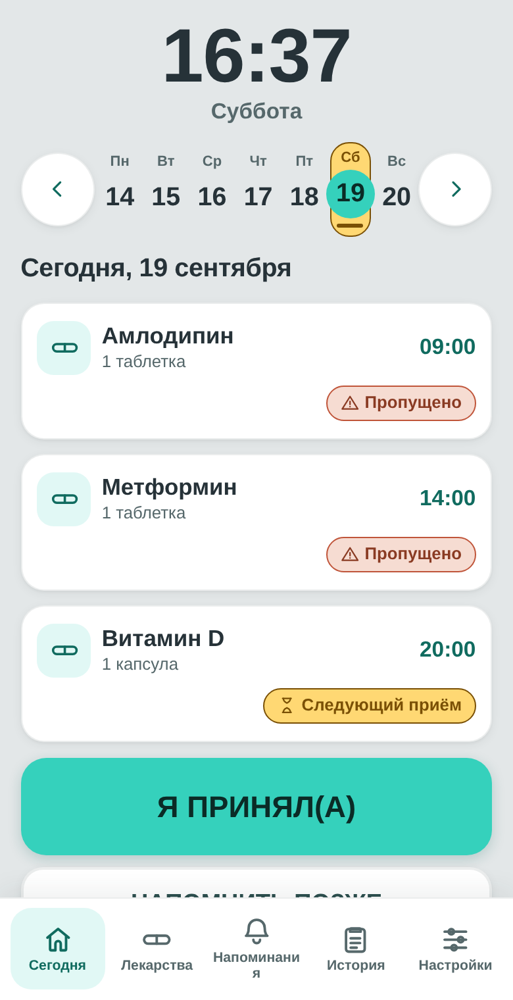
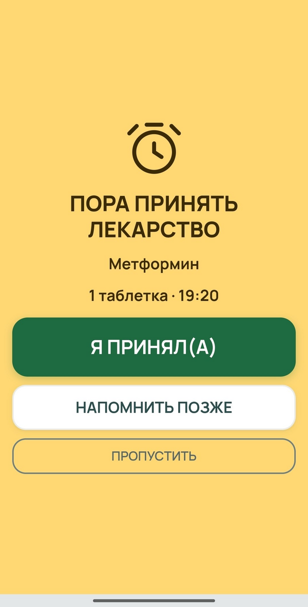
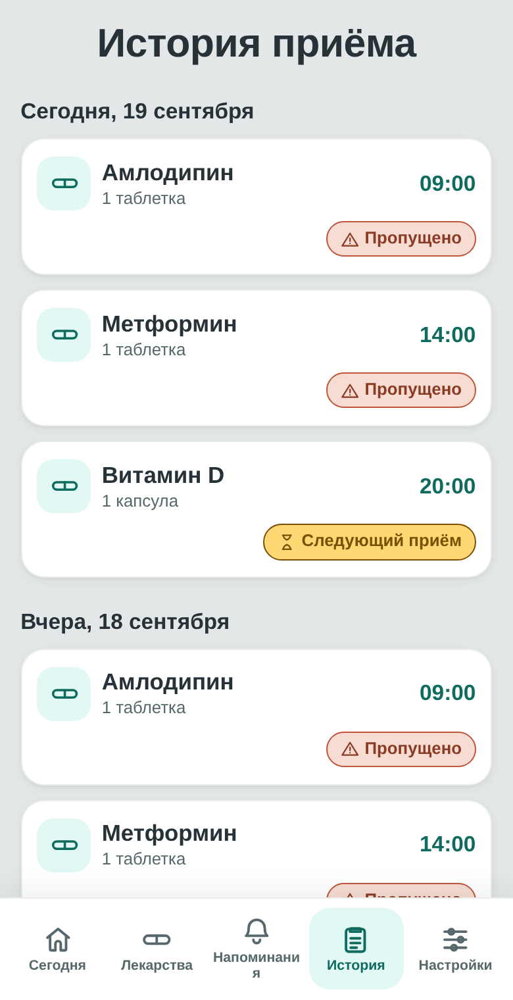
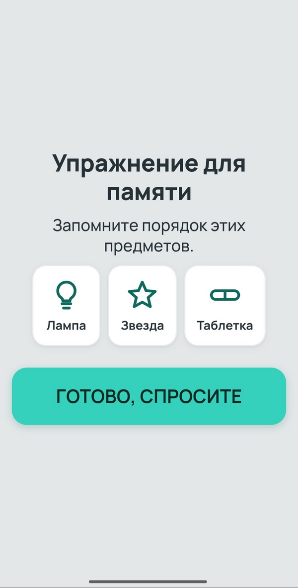

Лекарства вовремя.
Забота каждый день.
SilverCare — простой помощник для пожилых людей, который напоминает о приёме лекарств, помогает следить за расписанием и адаптирует интерфейс под возможности пользователя.

Почему SilverCare?
Приём нескольких препаратов по разному расписанию легко перепутать или пропустить.
Обычные приложения неудобны для пожилых людей из-за мелкого текста, сложной навигации и одного типа уведомлений.
SilverCare объединяет простое расписание и доступный интерфейс в одном спокойном экране.
Как работает SilverCare
Настройте
Добавьте лекарства, дозировку и время приёма.
Получите напоминание
SilverCare напомнит о приёме доступным пользователю способом.
Подтвердите
Нажмите большую кнопку «Я принял(а)».
Следите за историей
Просматривайте выполненные и пропущенные приёмы.
Приложение адаптируется под человека.
При первом запуске SilverCare помогает подобрать удобный способ взаимодействия.
Зрение
Крупный текст, высокий контраст и голосовое сопровождение помогают получать важную информацию.
Слух
Визуальные сигналы и вибрация позволяют не зависеть только от звуковых уведомлений.
Простое управление
Большие кнопки и понятные действия снижают необходимость точных нажатий.
Не пользователь адаптируется под приложение.
SilverCare адаптируется под пользователя.
Возможности
Расписание лекарств
Простой недельный календарь показывает приёмы на любой выбранный день — сегодня, вчера или наперёд, без сложной месячной сетки.

Понятные напоминания
Крупное полноэкранное напоминание показывает название лекарства, дозировку и время — с одной большой кнопкой подтверждения.

История приёмов
Видно, что и когда было принято, отложено или пропущено — для самого человека и его близких.

Упражнения каждый день
Необязательные простые упражнения поддерживают ежедневную умственную активность.
Одно напоминание.
Несколько способов его получить.
SilverCare подстраивает то, как передаётся важная информация, — под предпочтения человека и возможности устройства.
Голос
Голосовое озвучивание напоминаний для тех, кому проще услышать, чем прочитать.
Визуальный сигнал
Яркий полноэкранный экран, который трудно не заметить.
Вибрация
Один заметный сигнал вибрацией — без бесконечного дребезжания.
Посмотрите SilverCare в действии
Главный экран
Напоминание
История